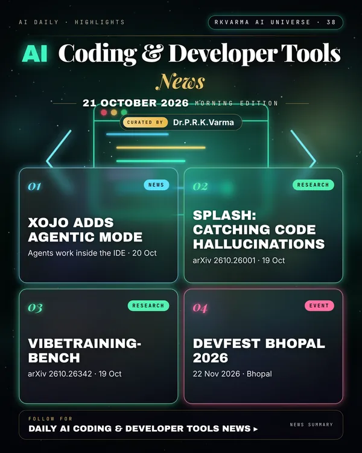

Latest updates · 21 October 2026
In the full issue →AI agents are becoming first-class members of development tools: Xojo's 2026 Release 3 adds an Agentic Mode that lets coding agents work directly on projects.
Research, industry & policy
- Xojo 2026 Release 3 introduces Agentic Mode, Xojo via PR Newswire · 20 Oct 2026: AI coding agents can work directly on Xojo projects, see their changes reflected in the IDE and catch compilation errors on their own; the release also adds new controls and performance gains across desktop, web and mobile.
Journals & preprints
- SPLASH: Contrastive Audit Pressure for Detecting and Localizing Security Hallucinations in Generated Code, arXiv 2610.26001 · 19 Oct 2026: Code generated by large language models often passes every functional test while remaining insecure.
- VibeTraining-Bench: Data-Trainer-Harness Co-Design for Iterative System Improvement, arXiv 2610.26342 · 19 Oct 2026: Recursive self-improvement (RSI) requires agents to diagnose system bottlenecks and coordinate improvements across training and inference.
Conferences, workshops & events
- DevFest Bhopal 2026, 22 Nov 2026 · Bhopal (Minto Hall): AI, cloud and developer conference.
- WeAreDevelopers Conference India, 25–26 Nov 2026 · Bengaluru: Building and shipping software in the age of AI.
Why it matters
Agents that can see compiler errors and IDE state fix more of their own mistakes before a developer has to.

